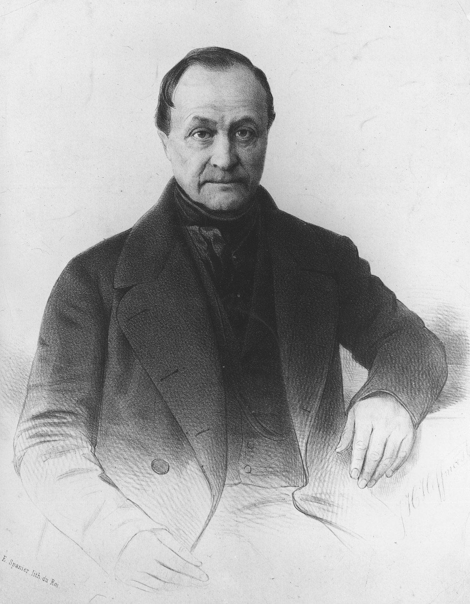

| Isidore Marie Auguste François Xavier Comte Montpellier, 19 de enero de 1798-París, 5 de septiembre de 1857) fue un filósofo francés, y escritor que formuló la doctrina del positivismo. A menudo se le considera como el primer filósofo de la ciencia en el sentido moderno del término. Las ideas de Comte también fueron fundamentales para el desarrollo de la sociología; de hecho, inventó el término y trató esa disciplina como el logro supremo de las ciencias. Influenciado por el socialista utópico Henri de Saint-Simon,Comte desarrolló la filosofía positiva en un intento de remediar el desorden social causado por la Revolución Francesa, que creía indicaba una transición inminente a una nueva forma de sociedad. Buscó establecer una nueva doctrina social basada en la ciencia, a la que denominó "positivismo". Tuvo un gran impacto en el pensamiento del siglo XIX, influyendo en el trabajo de pensadores sociales como John Stuart Mill y George Eliot. Su concepto de Sociología y evolucionismo social marcó la pauta para los primeros teóricos sociales y antropólogos como Harriet Martineau y Herbert Spencer, evolucionando hacia la sociología académica moderna presentada por Émile Durkheim como investigación social práctica y objetiva. Las teorías sociales de Comte culminaron en su "Religión de la Humanidad",que presagió el desarrollo de organizaciones humanistas religiosas no teístas y humanistas seculares en el siglo XIX. También pudo haber acuñado la palabra altruisme (altruismo). |
 |
| mmmmmmmmmmmmmmmmmmmmmmmmmmmmmmmm mmmmmmmmSOCIOLOGIA DE COMTE. |
La sociología de Comte, cuyo objeto de estudio se asienta tanto en los procesos sociales como en la humanidad visible en el estadio positivo, asume ya desde un inicio esta diferenciación de la realidad social con respecto al ser humano. En ella se defiende la posición de que el mundo social debe ser explicado según sus propias reglas y, como máximo, con el apoyo de la observación de tipo empírica. En este marco, el estudio del ser humano en contraposición a los estadios teológicos y metafísicos no tiene valor alguno al interior de la denominada fase positiva del espíritu -no por nada representada por el sociólogo francés. Comte mismo lo afirma enfáticamente: “Sería imposible derivar el estudio colectivo del género del estudio del individuo, pues las condiciones de la vida social, que modifican los efectos de las leyes fisiológicas, merecen aquí atención central. La sociología, con la mayor consideración de su relación necesaria con la fisiología, debe estar edificada sobre un fundamento de observación directa que le sea propia” La sociología debe, según Comte, intentar captar la realidad social en su condición interna, lo que solo sería posible de alcanzar a través de un acercamiento a la realidad empírica. Sobre la base de un deseado traspaso de las formas investigativas de las ciencias naturales y de una correspondiente renuncia a la aspiración de asir lo absoluto, la sociología positiva de Comte limita sus esfuerzos al campo de la observación de lo real, que se erige como “fundamento del conocimiento como tal”. A partir de ello, el espíritu positivista se levanta con plena fuerza. Este “reconoce desde ahora como regla fundamental que toda afirmación que carezca de correlación con un hecho factual sea particular o general, no puede ofrecer ningún sentido real”. Desde la teoría de Comte se enraíza ya esta forma de conocimiento específicamente sociológica. Los procesos sociales junto a sus leyes y la sociedad moderna, en tanto que estadio positivo de la humanidad, se investigan teóricamente a través de una observación de su propia constitución, cuyo complemento se encuentra, siguiendo el modelo de las ciencias naturales, en el contacto con lo empírico. |
En su pensamiento confluyeron las líneas argumentales que constituyeron Ia racionalidad moderna de inspiración epistemológica matemático formal y la racionalidad critica social sostenida en la idea de progreso. LA LEY DE LOS TRES ESTADOS. La ley de los tres estados es una teoría concebida por Auguste Comte en su obra Curso de filosofía positiva (1830-1845). Se afirma que la humanidad pasa por tres estados teóricos o mentales diferentes: el estado teológico, o ficticio; el estado metafísico, o abstracto y por último el estado científico, o positivo. El primero es un punto de partida necesario para la inteligencia humana, está plagado de deducción e imaginación y dan respuestas a preguntas absolutas; el segundo está extremadamente basado en la crítica que genera un desorden que no permite el progreso ni la unión mental del todo y el tercero es un estado fijo y definitivo construido gracias al recorrido de las anteriores etapas en la que se logrará ordenar y progresar de forma unificada. Lograra un consenso en el plano de las creencias que permitirá el avance |
La progresión de los tres estados:
|